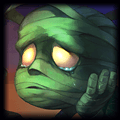
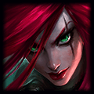
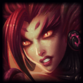
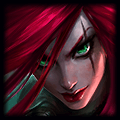
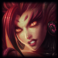

Matheus de Amorim - Fugido do CDP do Pitimbú

Matheus de Amorim Santana, mais conhecido como apenas Amorim ou Amoro, é um streamer desumilde que compartilha com o mundo suas peripércias por dentro das mais obscuras profundezas do Ferro I. Amorim tem uma séria relação de amor e ódio com o game e dizem as antigas lendas que ele troca os amigos por...
Amorim joga fácil com:
 


